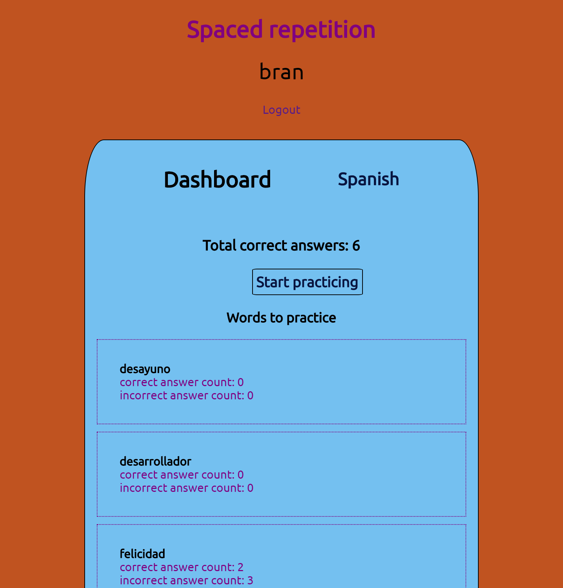

Hello, I’m Brannen. I’m a full-stack developer and an avid problem solver.
I am a passionate and experienced full-stack web developer with a diverse range of skills and expertise. I find great energy in coding and solving real-world problems, constantly seeking opportunities to learn and grow. Overcoming challenges is my driving force, as it allows me to push my boundaries and discover new possibilities. In my career, I am eager to join a team of like-minded and motivated developers who are committed to delivering high-quality work. Collaborating with such a team would not only allow us to produce outstanding results together but also foster an environment of continuous learning and growth. I am enthusiastic about acquiring new and valuable skills that contribute to our collective success. Beyond my professional pursuits, I am an avid gamer, finding joy in exploring virtual worlds and engaging in immersive experiences. Additionally, I prioritize maintaining my physical fitness, dedicating time to staying active and healthy. Nature also holds a special place in my heart, and I am drawn to the serenity of the backcountry. Backpacking, road-tripping, and hiking are among my favorite activities, providing me with a sense of adventure and exploration.

Languages:
Python, JavaScript, Ruby on Rails, TypeScript
Front-end:
React.JS, Vue.js, Angular.js, Next.js, jQuery, HTML, CSS, Jest, Cypress
Back-end:
Node, Express, Knex, PSQL, Mocha, Chai, Supertest, RESTful API
Other Tech:
VSCode, Heroku, Vercel, Integration testing, Postman, DBeaver, Git, GitHub, BitBucket, Odoo, MV*, RSpec, Capybara, JEST, Unit Testing, AWS, Docker, Linux, R, MobX, Redux, Sentry, New Relic, Sentry
Cuttlesoft Remote (St. Paul, MN)
Software Engineer | Jan 2022 - Present
- Interchanging between frameworks to create multiple projects ranging from bioinformatics reporting applications in React.js/Python to a cell tower mapping tool using MapBox and React.js and supporting development on a black label car reservation application utilizing Ruby on Rails and Angular.js.
- Working in an agile, team-based development process to best-fit requests from clients to assist in achieving their personalized software vision.
- Utilizing technology trends to better serve clients and provide an excellent post-development experience.
- Supporting projects through CI/CD pipelines like Docker and CircleCI and leading projects with test-driven development.
- Tech: Ruby on Rails, Python, Angular.js, React.js (Typescript & Javascript), Next.js, HTML, CSS, Tailwind, Postgres, Docker, CircleCI, GitHub actions, AWS.
Locus Health Remote (Charlottesville, VA)
Software Engineer | June 2021 - Jan 2022
- Developing solutions for health care system care using a combination of multiple Ruby on Rails applications, integrated with front-end client applications in Vue.js.
- Maintaining and continuing to improve codebase through innovative ideas to create more efficient applications that serve users.
- Brainstorming, planning, and executing on new and competitive features within our codebase to better serve the healthcare space effectively.
- Working in an agile, team-based development process, with high levels of communication, collaboration, and support throughout the team.
- Tech: Ruby on Rails, Javascript, MySql, HTML, CSS, Vue.js, Rspec.
TaskSuite Austin, TX
Software Engineer | Aug 2020 - May 2021
- Developing client solutions using Odoo/MV* framework, integrating with custom Front-end React applications.
- Maintaining cloud-hosted client applications using Proxmox.
- Producing innovative ideas within the CRM workspace to further client satisfaction and growth of the company.
- Working within teams to effectively problem solve and create a seamless workflow.
- Enhancing current code base with testing and agile style development process and integrating with 3rd party APIs.
- Tech: Javascript, Python, Odoo, XML, Postgres, React.js.
Clear Mind

Explore your feelings and thoughts with daily journals and personal data tracking. This digital journaling application allows users to keep track of daily tasks, record inner thoughts, encourage mindful acts, and track sleep and emotional patterns. Upon submitting a journal entry, the user's dashboard will update to display emotion and sleep data, allowing the user to see a visual representation of their progress over time. The user can use the calendar on the mindfulness center page to navigate to a specific day's journal and update entries to their liking.


NuutrEd

This application helps users get a better understanding of how many calories they should be eating in a day based upon basic biometric and activity information. This app provides mutliple charts set to different performance goals with corresponding caloric expenditures, as well as allows users to track their weight using a weight graph.
Spaced Repetition Language App
This is a Spanish translator app that has been produced utilizing a linked list data structure and a specific algorithm mentioned above. The user will see the words you get wrong more often to get more practice with more difficult words. The user can see their current total score, how many times they have gotten a word wrong and right. As well as a nice message congratulating the user for right answers.